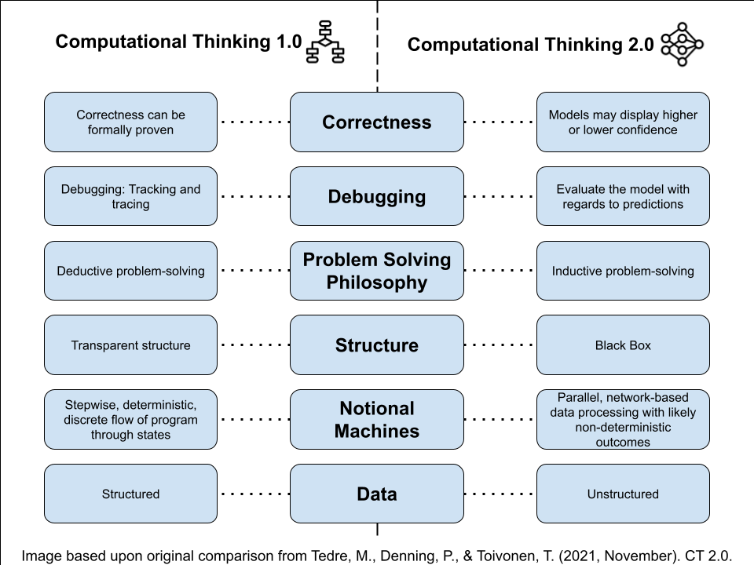

Η Υπολογιστική Σκέψη (ΥΣ) έχει γίνει ακρογωνιαίος λίθος της εκπαίδευσης στην πληροφορική. Η ΥΣ2.0 εισήχθη πρόσφατα από τον Matti Tedre και την ομάδα του1 για να βοηθήσει τους εκπαιδευόμενους να διακρίνουν μεταξύ των παραδοσιακών, βάσει κανόνα ( rule-based) προσεγγίσεων (ΥΣ1.0) στην επίλυση προβλημάτων και των προσεγγίσεων βάσει δεδομένων (data-driven) (ΥΣ2.0) και χρησιμοποιούνται από συστήματα AI. Καθώς τα συστήματα περιλαμβάνουν ολοένα και περισσότερο τόσο βάσει κανόνα (rule-based) όσο και βάσει δεδομένων (data-driven) στοιχεία, είναι απαραίτητο οι εκπαιδευόμενοι να κατανοούν τις διαφορές και να μπορούν να εργάζονται και με τα δύο παραδείγματα.
Summary
Βασικές έννοιες
Επίλυση προβλημάτων
- Η ΥΣ1.0 εφαρμόζει προσεγγίσεις βάσει κανόνων στην επίλυση προβλημάτων, όπως αυτές που χρησιμοποιούνται στο Scratch και την Python.
- Η ΥΣ2.0 εισάγει μια μετατόπιση προς μια προσέγγιση βάσει δεδομένων (data-driven) στην επίλυση προβλημάτων.
- Η αξιολόγηση μοντέλου, η ποιότητα των δεδομένων και οι προκαταλήψεις αποκτούν σημασία στην ΥΣ2.0, καθώς τα ελαττωματικά δεδομένα μπορεί να οδηγήσουν σε άδικα αποτελέσματα.
Ορθότητα
- Η ΥΣ1.0 διδάσκει συνήθως την ορθότητα ως δυαδική, όπου τα προγράμματα παράγουν ή δεν παράγουν σωστά αποτελέσματα.
- Η ΥΣ2.0 μετρά την ορθότητα κατά βαθμό, όπου τα μοντέλα ML παράγουν προβλέψεις και επίπεδα εμπιστοσύνης.
Εντοπισμός σφαλμάτων
- Στην ΥΣ1.0, ο εντοπισμός σφαλμάτων είναι δομημένος και διαφανής. Τα σφάλματα αντιμετωπίζονται με την ανίχνευση της εκτέλεσης του προγράμματος βήμα προς βήμα.
- Στην ΥΣ2.0, τα μοντέλα ML είναι αδιαφανή μαύρα κουτιά. Τα προβλήματα εντοπίζονται μέσω αναλύσεων των δεδομένων εισόδου και εξόδου.
- Αυτό απαιτεί μια αλλαγή νοοτροπίας στον εντοπισμό σφαλμάτων, με έμφαση στη βελτίωση των δεδομένων εκπαίδευσης, στη ρύθμιση παραμέτρων και στον έλεγχο με ένα ευρύ φάσμα δεδομένων.

Επίλυση προβλημάτων
Η ΥΣ είναι ένα πλαίσιο για την κατανόηση της επίλυσης προβλημάτων με τη χρήση υπολογισμού. Η παραδοσιακή ΥΣ1.0 προέκυψε από τις πρώιμες έννοιες της πληροφορικής, χρησιμοποιώντας μια βάσει κανόνα προσέγγιση όπου τα προγράμματα υπολογιστών ακολουθούν ακριβείς οδηγίες: με σαφώς καθορισμένα δεδομένα εισόδου, οι οδηγίες ακολουθούνται βήμα προς βήμα για να παραχθούν προβλέψιμα δεδομένα εξόδου. Όταν διδάσκονται με την ΥΣ.0, οι εκπαιδευόμενοι μαθαίνουν να αναλύουν την εργασία σε υποεργασίες και να γράφουν σαφείς οδηγίες για κάθε βήμα πριν υλοποιήσουν αυτές τις οδηγίες σε εργαλεία όπως το Scratch και σε γλώσσες όπως η Python. Αντίθετα, η επίλυση προβλημάτων στην ΥΣ2.0 μετατοπίζεται σε μια προσέγγιση βάσει δεδομένων (data-driven)¹. Αντί να γράφουν ρητές οδηγίες, οι εκπαιδευόμενοι μαθαίνουν να συλλέγουν, να καθαρίζουν, να επισημαίνουν και να οργανώνουν μεγάλες ποσότητες σχετικών δεδομένων. Στη συνέχεια, οι εκπαιδευόμενοι χρησιμοποιούν αυτά τα δεδομένα για να εκπαιδεύσουν συστήματα μηχανικής μάθησης (ML), ώστε να αναγνωρίζουν πρότυπα και να παράγουν μοντέλα που δημιουργούν προβλέψεις και επιλύουν προβλήματα. Για παράδειγμα, στην ΥΣ1.0, οι εκπαιδευόμενοι θα μπορούσαν να δημιουργήσουν ένα εργαλείο που ταξινομεί γάτες χρησιμοποιώντας κανόνες Εάν…Τότε σχετικά με τα μουστάκια και τα μυτερά αυτιά. Ωστόσο, στην ΥΣ2.0, θα χρησιμοποιούσαν πολλές εικόνες γατών για να εκπαιδεύσουν ένα μοντέλο με επαρκή ακρίβεια. Επειδή τα δεδομένα βρίσκονται στο επίκεντρο αυτής της διαδικασίας, η ποιότητα των δεδομένων, η αξιολόγηση και οι προκαταλήψεις γίνονται κρίσιμες έννοιες: ελαττωματικά ή προκατειλημμένα σύνολα δεδομένων μπορεί να οδηγήσουν σε αναξιόπιστα ή άδικα αποτελέσματα. Οι σύγχρονες εφαρμογές συνδυάζουν τόσο βάσει κανόνα όσο και βάσει δεδομένων (data-driven ) προσεγγίσεις, από κείμενο και εικόνες που παράγονται από AI, έως λογισμικό αναγνώρισης προσώπου και προτάσεις στα μέσα κοινωνικής δικτύωσης. Η κατανόηση τόσο της ΥΣ1.0 όσο και της ΥΣ2.0 δίνει τη δυνατότητα στους εκπαιδευόμενους όχι μόνο να εργάζονται αποτελεσματικά με αυτά τα εργαλεία, αλλά και να είναι ενεργοί συμμετέχοντες και δημιουργοί αντί για παθητικοί καταναλωτές στις ολοένα και πιο βάσει δεδομένων ( data-driven) κοινωνίες μας2.
Κατανόηση της ορθότητας
Η ορθότητα είναι μια σημαντική έννοια στην πληροφορική και καθορίζει το αν ένα πρόγραμμα λειτουργεί όπως προοριζόταν. Στην ΥΣ1.0, συχνά διδάσκουμε στους εκπαιδευόμενους ότι η ορθότητα σημαίνει πως ένα πρόγραμμα είναι είτε σωστό είτε λανθασμένο. Αυτή η προσέγγιση δίνει έμφαση στην ακρίβεια, όπου οι οδηγίες πρέπει να είναι συντακτικά σωστές, να είναι γραμμένες με λογικό τρόπο και να παράγουν το αναμενόμενο αποτέλεσμα. Τα βάσει κανόνα (Rule-based) προγράμματα που χαρακτηρίζονται από την ΥΣ1.0 προϋποθέτουν υψηλό επίπεδο διαφάνειας: κάθε οδηγία είναι ρητά γραμμένη και μπορεί να ανιχνευθεί, τα σφάλματα μπορούν να εντοπιστούν με ακρίβεια και οι διορθώσεις να δοκιμαστούν και να εφαρμοστούν. Στην ΥΣ2.0, η ορθότητα δεν είναι πλέον μια σταθερή διάκριση σωστού ή λανθασμένου. Τα αποτελέσματα σε πολλά μοντέλα ML είναι προβλέψεις βασισμένες σε πιθανότητες με διαφορετικά επίπεδα εμπιστοσύνης1. Για παράδειγμα, ένα μοντέλο ML μπορεί να ταξινομήσει μια εικόνα γάτας με βαθμό εμπιστοσύνης 95%. Ακόμη και καλά εκπαιδευμένα μοντέλα ML, παρά την εκπαίδευσή τους σε μεγάλα σύνολα δεδομένων, μπορεί να παράγουν σφάλματα, ιδιαίτερα με νέα δεδομένα εισόδου. Για παράδειγμα, μια εικόνα γάτας θα μπορούσε να ταξινομηθεί εσφαλμένα ως σκύλος με βαθμό εμπιστοσύνης 60%. Οι προγραμματιστές καθορίζουν αποδεκτά επίπεδα ορθότητας κατά τον σχεδιασμό και την κατασκευή μοντέλων ML. Αυτό απαιτεί από τους προγραμματιστές να ρυθμίζουν προσεκτικά τη διαδικασία εκπαίδευσης και να θέτουν κατάλληλα κατώφλια εμπιστοσύνης, ώστε να καθορίζεται αν μια πρόβλεψη είναι αποδεκτή για ένα συγκεκριμένο πλαίσιο. Για τους εκπαιδευτικούς, αυτή η μετατόπιση στην κατανόηση της ορθότητας απαιτεί να βοηθήσουν τους νέους να αναπτύξουν δεξιότητες κριτικής σκέψης γύρω από τα εργαλεία και συστήματα AI βάσει δεδομένων (data-driven). Θα μπορούσαμε να καθοδηγήσουμε τους εκπαιδευόμενους ώστε να θέτουν βαθύτερες ερωτήσεις: «Πόσο αξιόπιστη είναι αυτή η πρόβλεψη με νέα δεδομένα;» ή «Ποιες προκαταλήψεις μπορεί να υπάρχουν στα δεδομένα εκπαίδευσης;» Ορίζοντας την ορθότητα ή την καταλληλότητα της ΥΣ2.0 ως μια συνεχή διαδικασία αξιολόγησης και διαρκούς βελτίωσης των μοντέλων ώστε να ενισχύεται η αξιοπιστία τους σε εφαρμογές του πραγματικού κόσμου αντί ως ένα σταθερό αποτέλεσμα, προετοιμάζουμε τους εκπαιδευόμενους όχι μόνο να χρησιμοποιούν εργαλεία AI, αλλά και να αναγνωρίζουν τους περιορισμούς των συστημάτων και τις πιθανές βλάβες που μπορεί να προκαλέσουν τα δεδομένα εξόδου τους.
Εντοπισμός σφαλμάτων
Ο εντοπισμός σφαλμάτων είναι μια ακόμη πρακτική που παίρνει διαφορετικές μορφές στην ΥΣ1.0 και στην ΥΣ2.0. Για παράδειγμα, αν ένα βάσει κανόνα (rule-based) πρόγραμμα που υλοποιείται είτε στο Scratch είτε στην Python δε λειτουργεί όπως αναμένεται, οι εκπαιδευόμενοι μπορούν να εμφανίσουν τις τιμές των μεταβλητών, να ορίσουν σημεία διακοπής ή να ανιχνεύσουν τον κώδικα γραμμή προς γραμμή για να βρουν πού συνέβη το σφάλμα. Λόγω του υψηλού επιπέδου διαφάνειας σε τέτοια προγράμματα, μπορούμε να εφαρμόζουμε συστηματικές και δομημένες πρακτικές εντοπισμού και διόρθωσης σφαλμάτων. Ωστόσο, τα μοντέλα ML συχνά θεωρούνται μαύρα κουτιά3, και αυτή η αδιαφάνεια καθιστά τον εντοπισμό σφαλμάτων στην ΥΣ2,0 λιγότερο απλό. Τα μοντέλα ML είναι περίπλοκα, διασυνδεδεμένα δίκτυα με δισεκατομμύρια παραμέτρους που καθορίζουν τα αποτελέσματα και τις προβλέψεις με τρόπους που είναι αδύνατον να ανιχνευθούν βήμα προς βήμα. Όταν ένας ταξινομητής εικόνων επισημαίνει εσφαλμένα μια εικόνα γάτας ως σκύλο, οι εκπαιδευόμενοι δεν μπορούν απλώς να βρουν τη γραμμή κώδικα που προκαλεί το σφάλμα, γιατί τέτοια γραμμή δεν υπάρχει. Αντίθετα, ο εντοπισμός σφαλμάτων στην ΥΣ2.0 περιλαμβάνει την εξέταση και τη βελτίωση της ποιότητας των δεδομένων εκπαίδευσης, τη ρύθμιση μεταβλητών και παραμέτρων, καθώς και τη δοκιμή με ένα εύρος διαφορετικών δεδομένων εισόδου για τον εντοπισμό μοτίβων στα σφάλματα (π.χ. οι γάτες με μυτερά αυτιά είναι πιο πιθανό να ταξινομηθούν εσφαλμένα ως σκύλοι). Ο εντοπισμός σφαλμάτων απαιτεί πλέον από τους εκπαιδευτικούς να μετατοπιστούν από τον εντοπισμό σφαλμάτων και τη διόρθωσή τους στην εστίαση στο πώς οι αλλαγές στα δεδομένα και στις παραμέτρους μπορούν να επηρεάσουν τη συνολική απόδοση.
Γιατί έχει σημασία η ΥΣ2.0
Χωρίς την ΥΣ2.0, οι σημερινοί εκπαιδευόμενοι θα παραμείνουν παθητικοί καταναλωτές αντί για ενημερωμένοι συμμετέχοντες σε έναν κόσμο που διαμορφώνεται ολοένα και περισσότερο από τεχνολογίες AI βάσει δεδομένων (data-driven). Η ενσωμάτωση της ΥΣ2.0 παράλληλα με την παραδοσιακή υπολογιστική σκέψη παρέχει στους εκπαιδευόμενους μια ακριβή κατανόηση των υπολογιστικών συστημάτων, συμπεριλαμβανομένου του τρόπου με τον οποίο η επίλυση προβλημάτων, η ορθότητα και ο εντοπισμός σφαλμάτων διαφέρουν στα συστήματα βάσει δεδομένων (data-driven). Αυτό θα ενδυναμώσει τους εκπαιδευόμενους ώστε να αξιολογούν κριτικά τα μοντέλα ML, να κατανοούν πώς χρησιμοποιούνται τα δεδομένα για την εκπαίδευση μοντέλων, να αναγνωρίζουν πιθανές προκαταλήψεις και ακόμη και να δημιουργούν τα δικά τους έργα ML. Η υιοθέτηση της ΥΣ2.0 καθιστά την πληροφορική πιο ρεαλιστική και αντιπροσωπευτική του πραγματικού κόσμου, προσφέροντας στους εκπαιδευόμενους διαδρομές πέρα από τον παραδοσιακό προγραμματισμό και προς μελλοντικές σταδιοδρομίες όπου ο ψηφιακός γραμματισμός AI είναι καθοριστικός.